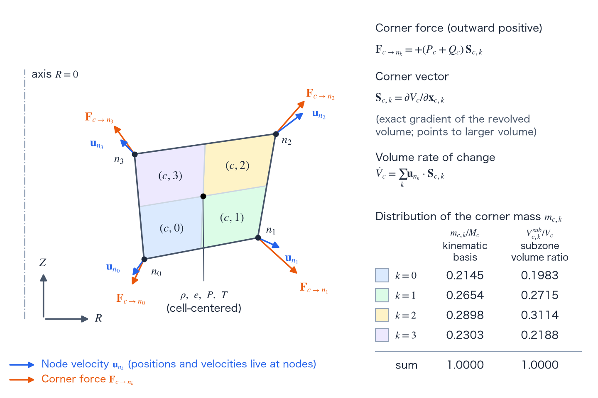
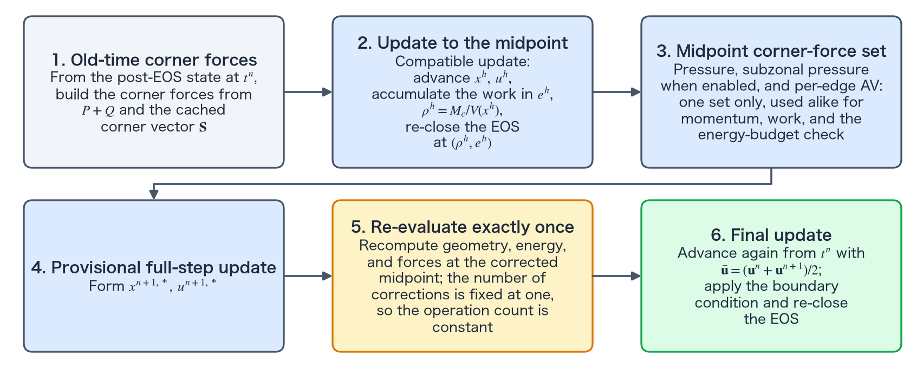

Lagrangian hydrodynamics reference
TENRYU advances material motion with a staggered Lagrangian scheme in 1D — spherical, cylindrical, or planar measures via Mesh.geometry_1d — and 2D axisymmetric RZ geometry. Thermodynamic state lives in cells, kinematics lives at nodes, and the 2D compatible path pairs corner forces with the same force work used by the internal-energy update. Terms specific to this calculation are defined in the terms section.
Physical mechanism
A Lagrangian mesh moves with the material, so material interfaces and contact discontinuities remain on cell boundaries instead of diffusing through them. Converging shells retain their resolution — a 1000× volumetric compression compresses the cells with the material — and there is no advection term to discretize. The price is mesh distortion in 2D: shear and vorticity can tangle a moving mesh. That is the subject of the companion ALE (arbitrary Lagrangian–Eulerian) page, not this one.
The placement of thermodynamic state in cells and kinematics at nodes is the classic von Neumann staggering. Compatible hydrodynamics in the sense of Caramana–Burton–Shashkov–Whalen [2] builds the corner force on a node and the cell \(p\,dV\) work from the same corner vector, \(\mathbf S_{c,k}=\partial V_c/\partial\mathbf x_{c,k}\) (\(c\) is the cell and \(k\) the corner index). What the kinetic energy gains through "force × node velocity" and what the internal energy loses through "pressure × volume rate" then become two readings of one and the same discrete quantity — the momentum and internal-energy equations are transposes (adjoints) of each other — so the kinetic-energy change and the internal-energy change cancel identically, and total energy is conserved to round-off by construction rather than by an a posteriori fix. In RZ, the same construction uses the exact gradient of the revolved volume.
An inviscid staggered scheme has no mechanism to produce the entropy required across a shock. Artificial viscosity supplies a dissipative pressure confined to compression, so captured shocks satisfy the Rankine–Hugoniot jump conditions over a few cells: its quadratic term handles strong shocks and its linear term handles the weak-shock tail. Scalar vNR [1] ignores direction and therefore over-damps converging and shearing flows; the CSW98 edge AV measures compression edge by edge on the median mesh — the auxiliary mesh of the segments that connect cell centers to edge midpoints — and its limiter switches dissipation off for self-similar compression, rigid rotation, and linear shear. Bilinear quadrilaterals also admit a zero-energy checkerboard, or hourglass, mode that is invisible to cell-average divergence. Subzonal pressures resist it with zero-net corner forces; they are a stabilizer, not a substitute for shock AV.
The default integrator on a 2D RZ single-block mesh is a midpoint scheme whose corrector runs exactly once. That fixed operation count makes runs bitwise reproducible, unlike correctors that iterate to a tolerance. The measured smooth-flow orders (2026-07-27, verification deck 2d_rz_v3_smooth_temporal) are \(p_\rho=2.0000\) for density and \(p_e=1.9999\) for energy, versus about 1.0007 for the legacy predictor–corrector, whose stale pressure closure (the pressure that the EOS returns for the density and internal energy of that moment) during compression costs a full order. At driver level, within the operator splitting, hydro runs as two hydro half-steps around the field operators (a hydro half-step advances the Lagrangian hydrodynamics by half of the outer step, \(\Delta t/2\)), with an EOS re-closure — recomputing temperature, pressure, and specific heat from the EOS — before every operator that reads the state.
Terms used in this calculation
2D RZ hydrodynamics uses corners, subzones, and edges as the units in which the forces of a quadrilateral cell are distributed to its nodes. The terms below carry meanings specific to compatible discretization and to TENRYU's implementation, so they are defined here together. In the symbols, \(c\) is a cell, \(k=0,1,2,3\) numbers the corners (vertices) of a cell, and \(n\) is a node. The numbering runs around the vertices of the quadrilateral, and \(k\pm1\) denotes the neighboring corner.
Corner, subzone, corner mass, corner vector, and corner force
A corner is the pair \((c,k)\) of a cell \(c\) and the node \(n_k\) at its \(k\)-th vertex. A quadrilateral has four corners and a triangle has three. A node belongs to as many corners as there are cells that have it as a vertex, and the momentum of the node is set by the sum of the forces on those corners.
A subzone is the small quadrilateral inside a cell that belongs to the corner \((c,k)\); its vertices are the node \(n_k\), the midpoints of the two edges adjacent to it, and the center of the cell (the mean of its vertices). The cell divides into four subzones (the colored regions of Figure A). The revolved volume of the subzone \((c,k)\) is written \(V^{sub}_{c,k}\), and \(\sum_kV^{sub}_{c,k}=V_c\). Subzones are the units in which the mass and the volume of a cell are assigned to its corners.
The corner mass \(m_{c,k}\) is the part of the cell mass \(M_c\) assigned to a corner, with \(\sum_km_{c,k}=M_c\). The mass of a node (the true RZ nodal mass) is the sum of the masses of the corners it belongs to. The corner mass sets the inertia of the node and is the numerator of the subzone density \(\rho^{sub}_{c,k}=m_{c,k}/V^{sub}_{c,k}\). The partition rule depends on the settings. By default (a 2D RZ deck with subzonal_pressure_enabled=True, and multiblock meshes), the cell mass is split in proportion to the revolved volumes of the subzones, \(m_{c,k}=M_c\,V^{sub}_{c,k}/\sum_jV^{sub}_{c,j}\). On a structured mesh with subzonal pressure disabled, the partition chosen by corner_mass_convention is used (Corner masses and compatible forces).
A corner vector is a vector that corresponds to an area and sets the direction and magnitude of the force at the corner \((c,k)\). There are two kinds.
The volume-gradient corner vector \(\mathbf S_{c,k}=\partial V_c/\partial\mathbf x_{c,k}\) is the derivative of the revolved volume of the cell \(c\) with respect to the position \(\mathbf x_{c,k}\) of the node \(n_k\); it points toward increasing volume. The volume-weighted momentum scheme uses it, and the force and the volume rate \(\dot V_c=\sum_k\mathbf u_{n_k}\cdot\mathbf S_{c,k}\) share the same vector.
The planar corner vector \(\mathbf S^A_{c,k}=\tfrac12(z_{k+1}-z_{k-1},\,r_{k-1}-r_{k+1})\) is the outward vector, in the R–Z plane, perpendicular to the segment that joins the two vertices adjacent to the node \(n_k\), with half its length. The vertices are numbered counterclockwise in the \((r,z)\) plane, and for a cell numbered clockwise the sign is reversed so that the vector points outward. The area-weighted momentum scheme uses it.
The corner force \(\mathbf F_{c\to n_k}\) is the force that the cell \(c\) exerts on the node \(n_k\). In the volume-weighted scheme the pressure and viscosity contribution is \(\mathbf F_{c\to n_k}=+(P_c+Q_c)\,\mathbf S_{c,k}\), positive outward. The momentum equation of a node \(n\) is \(m_n\,d\mathbf u_n/dt=\sum_{(c,k)\to n}\mathbf F_{c\to n_k}\), where the sum runs over all corners that belong to \(n\), and the internal-energy equation of a cell uses the same corner forces (compatible). The subzonal-pressure force and the edge-AV force are also kept in separate arrays as corner forces of the same form.
Median mesh
The median mesh is the auxiliary mesh made of the segments that join the center of a cell to the midpoint of each of its edges (Figure 1 of CSW98 [3]). A quadrilateral has four such segments, and each is the boundary between two adjacent subzones.
The median-mesh vector \(\mathbf S^{med}_k\) is the vector perpendicular to the segment from the cell center to the midpoint of the edge \(k\to k+1\), whose magnitude corresponds to that segment. In planar geometry it has the length of the segment: with the cell center \(\mathbf x_c\) and the edge midpoint \(\mathbf m_k\), \(\mathbf S^{med}_k=R(-90^\circ)(\mathbf x_c-\mathbf m_k)\), where \(R(-90^\circ)\) is a rotation by \(-90^\circ\) and the direction is made outward. In the volume-weighted RZ scheme its magnitude is the area of the surface swept by revolving the segment about the axis. The subzonal-pressure force is built with it. The edge vector of the edge AV is the same vector in planar geometry and is constructed differently in RZ (edge AV terms).
Compatible discretization
Compatible discretization builds the momentum equation of a node and the internal-energy equation of a cell from the same set of discrete corner forces (Caramana–Burton–Shashkov–Whalen [2]). The change of the kinetic energy, \(\sum_n\mathbf u_n\cdot\mathbf F_n\), and the change of the internal energy, \(-\sum_c\sum_k\mathbf F_{c,k}\cdot\mathbf u_{n_k}\), are sums of the same terms, so the total energy is conserved by construction, without an a posteriori correction.
When a 2D RZ deck omits the key, the default is to build the work of the area-weighted momentum scheme from the same force as the momentum (aw_compatible_force_work=True). With it off, the internal energy is updated with the true-RZ \(p\,dV\), and the scheme is no longer compatible. The edge AV csw_edge_csw98 is computed on the compatible path that builds force and work from the same arrays, whichever momentum scheme is selected.
Subzonal pressure
Subzonal pressure is a pressure perturbation built from the deviation of the density of each subzone; it supplies a force that resists the hourglass mode (Caramana–Shashkov [4]). If the corner masses \(m_{c,k}\) are held fixed during Lagrangian motion, the subzone density \(\rho^{sub}_{c,k}\) is determined by the subzone volume alone. The EOS gives the subzone pressure \(p^{sub}_{c,k}\) from this density and the specific internal energy of the cell, and the difference from the cell pressure \(P_c\) is \(\delta p_{c,k}=p^{sub}_{c,k}-P_c\). The force on the corner \(k\) is written with the median-mesh vectors \(\mathbf S^{med}_k\) (for the edge \(k\to k+1\)) as follows.
$$ \begin{aligned} \delta\mathbf f^{sub}_{c,k}=M_f\Bigl[&(\delta p_{c,k}+\delta p_{c,k+1})\,\mathbf S^{med}_k\\ &-(\delta p_{c,k}+\delta p_{c,k-1})\,\mathbf S^{med}_{k-1}\Bigr]. \end{aligned} $$The cell-mean force left by round-off is subtracted so that \(\sum_k\delta\mathbf f^{sub}_{c,k}=0\). \(M_f\) is a weight that is zero when the density deviation \(x_c=(\max_k\rho^{sub}_{c,k}-\rho_c)/\rho_c\) of the subzones is zero and grows with \(x_c\). By default (subzonal_merit_mode="caramana_auto"), \(M_f=\bigl[\tfrac{\alpha_1}{2}\bigl(1-\cos\tfrac{\pi x_c}{2\alpha_2}\bigr)\bigr]^n\) for \(x_c\le2\alpha_2\) and \(M_f=\alpha_1^n\) for \(x_c>2\alpha_2\), with the defaults \(\alpha_1=\sqrt2\), \(\alpha_2=0.1\), and \(n=2\) (keys subzonal_alpha1, subzonal_alpha2, and subzonal_merit_power). The force acts only when the cell is distorted so that the ratios of the subzone volumes change, and it vanishes in a uniform expansion or compression.
The stiffness of the subzonal-pressure force gives a timestep limit \(\Delta t_c\le s\,\theta_*/\omega_c\), where \(\omega_c\) is an upper bound of the frequency of the oscillation that the subzonal-pressure force creates (subzonal_dt_length_mode="corner_bound", the default), \(s\) is subzonal_dt_spectral_safety (default 0.5), and \(\theta_*\) is subzonal_dt_omega_dt_limit (default 2). subzonal_dt_limiter_enabled=False removes this limit. With subzonal pressure enabled, the limit also acts on the timestep of the run.
The subzonal-pressure force written here is that of the default model (subzonal_force_model="legacy_median"), which applies when the key is omitted. The key also accepts hourglass_potential and merit_potential_v1. hourglass_potential builds the force from a stiffness potential on the size of the hourglass modes of the quadrilateral instead of from the density deviation of the subzones; it requires aw_compatible_force_work=True (the stiffness coefficient is hourglass_potential_kappa, default 0.1). merit_potential_v1 takes the exact gradient of a subzonal energy as its force; it cannot be combined with the area-weighted momentum scheme, and input validation rejects the combination. work_conjugate_v1 is recognized by name only; it is not implemented, and input validation rejects it.
Edge artificial viscosity
Edge-centered artificial viscosity (edge AV) is a viscous force that acts, edge by edge of a cell, along the velocity difference \(\Delta\mathbf v_e\) between the nodes at the two ends of the edge (CSW98 [3]). It is distributed to the two end nodes of the edge \(e\) as forces of equal magnitude and opposite direction, so the viscosity conserves momentum, and it only transfers kinetic energy to internal energy and never the other way. It acts only where the edge is compressing and is zero in expansion.
The edge vector \(\mathbf S_e\) is the median-mesh vector of the edge \(e\) (median mesh). In planar geometry it equals \(R(-90^\circ)(\mathbf x_c-\mathbf m_e)\) (\(\mathbf x_c\) is the cell center and \(\mathbf m_e\) the edge midpoint). In 2D RZ it is defined from the revolved-volume gradients \(\mathbf a_k=\partial V/\partial\mathbf x_k\): form \(\mathbf b_k=\mathbf a_k-\bar{\mathbf a}\) (\(\bar{\mathbf a}\) is the mean of the four \(\mathbf a_k\)) and take the vectors that satisfy \(\mathbf S_{k-1}-\mathbf S_k=\mathbf b_k\) and \(\sum_k\mathbf S_k=0\). The sum of their products with the velocity differences \(\Delta\mathbf v_k\) of the edges, \(\sum_k\mathbf S_k\cdot\Delta\mathbf v_k\), then equals the volume rate of the cell with the contribution of a uniform radial translation removed.
The compression switch is the condition \(\Delta\mathbf v_e\cdot\mathbf S_e<0\) under which the viscous force of the edge acts. The left side is the contribution of the edge \(e\) to the volume rate of the cell (without the translation contribution in RZ), so the edge is compressing when it is negative. The force goes to zero continuously as \(\Delta\mathbf v_e\cdot\mathbf S_e\to0^-\).
The limiter \(\psi_e\) is a factor that reduces the viscous force of an edge by \((1-\psi_e)\): \(\psi_e=\max\bigl[0,\min\bigl(1,\,2r_L,\,2r_R,\,\tfrac12(r_L+r_R)\bigr)\bigr]\) (equations 12 and 18 of CSW98 [3]). \(r_L\) and \(r_R\) are the ratios of the velocity gradients of the two edges on either side along the same logical line (the same grid line of the mesh) to the velocity gradient of this edge. When the velocity is a linear function of the coordinates (self-similar compression, rigid rotation, linear shear), \(r_L=r_R=1\), \(\psi_e=1\), and the force of the edge vanishes. At the foot and the tail of a shock, where the neighboring edge is not compressing, \(\psi_e\) approaches 0 and the viscosity acts in full.
The Kuropatenko wave speed \(W_e\) is the speed that sets the magnitude of the viscous force of an edge. The force of an edge is given by the following expressions when \(\Delta\mathbf v_e\cdot\mathbf S_e<0\) and is zero otherwise.
$$ \begin{aligned} W_e&=C_2\frac{\gamma+1}{4}|\Delta\mathbf v_e|+\sqrt{\Bigl(C_2\frac{\gamma+1}{4}\Bigr)^2|\Delta\mathbf v_e|^2+C_1^2c_{s,e}^2},\\ \mathbf f_e&=\rho_eW_e\,(1-\psi_e)\,(\Delta\mathbf v_e\cdot\mathbf S_e)\,\widehat{\Delta\mathbf v}_e. \end{aligned} $$For weak compression (\(|\Delta\mathbf v_e|\to0\)), \(W_e\to C_1c_{s,e}\), and for strong compression \(W_e\to2C_2\frac{\gamma+1}{4}|\Delta\mathbf v_e|\) [5]. \(\widehat{\Delta\mathbf v}_e\) is the unit vector along \(\Delta\mathbf v_e\); \(\rho_e\) and \(c_{s,e}\) are the harmonic means of the density and the sound speed of the two cells that share the edge (the value of the cell itself at a physical boundary); and \(\gamma\) is the ratio of specific heats (ideal_gas_gamma; in the 2D multi-material closure, the harmonic mean of the effective \(\gamma\) of the two cells).
The edge AV is selected by av_model="csw_edge_csw98" (the default when a 2D RZ deck omits the key). The coefficients \(C_1\) and \(C_2\) are av_C1 and av_C2, and their default is 1 when a 2D edge model omits them. The forces of the edges are kept in a separate array, and the work on the internal energy is built from the same forces. For the timestep, every edge with a nonzero force imposes the limit \(\Delta t_e=C_{av}|\Delta\mathbf x_e|/\bigl[|\Delta\mathbf v_e|(1-\psi_e)\,|\widehat{\Delta\mathbf v}_e\cdot\hat{\mathbf S}_e|\bigr]\) (\(C_{av}\) is av_cfl_coefficient, default 0.25; \(\Delta\mathbf x_e\) is the vector of the edge and \(\hat{\mathbf S}_e\) is the unit vector of \(\mathbf S_e\)). A limit set by the stiffness at the nodes (csw98_dt_stiffness_safety, default 1) is added.
Area-weighted and volume-weighted momentum schemes, and the BBSW corner mass
The volume-weighted momentum scheme sums, at each node, the corner forces built from the volume-gradient corner vectors \(\mathbf S_{c,k}\) and divides by the true RZ nodal mass \(m_n\) built from the corner masses to obtain the acceleration of the node. Because the force and the volume rate share the same vector, compatibility holds.
The area-weighted momentum scheme sums, at each node, the corner forces \(\mathbf F^A_{c,k}=(P_c+Q_c)\,\mathbf S^A_{c,k}\) built in the planar R–Z plane and divides by the planar nodal mass \(M^A_n\) (by default built from the BBSW corner masses defined below) to obtain the acceleration of the node. The reason for adopting it is given in RZ momentum schemes. It is the default when a 2D RZ deck omits the key (rz_momentum_scheme="area_weighted_symmetric").
The BBSW corner mass \(m^B_{c,k}\) is the mass with which the compatible area-weighted momentum scheme measures the kinetic energy; it follows the definition of Barlow–Burton–Shashkov–Wendroff [6].
$$ m^B_{c,k}=M_c\,\frac{r_kA^k_c}{\sum_jr_jA^j_c}, \qquad A^k_c=\frac{T_{k-1}+T_k}{3}+\frac{A_c}{12}. $$Here \(M_c\) is the cell mass, \(r_k\) is the radius of the node of the corner \(k\), \(T_k\) is the area of the triangle whose vertices are the two nodes of the edge \(k\) (between the corners \(k\) and \(k+1\)) and the vertex mean of the cell, and \(A_c=\sum_kT_k\) is the planar area of the cell (the expression for \(A^k_c\) is that of a quadrilateral). \(\sum_km^B_{c,k}=M_c\), and \(m^B_{c,k}=0\) at a corner whose node is on the axis. The mass of a node is \(M^B_n=\sum_{(c,k)\to n}m^B_{c,k}\), the planar nodal mass is \(M^A_n=M^B_n/(2\pi r_n)\), and the kinetic energy is measured as \(K^B=\tfrac12\sum_nM^B_n|\mathbf u_n|^2\). With this mass and the work weight \(2\pi r\) of the internal-energy work, \(\Delta K^B+\sum_c\Delta U_c=W_{ext}\) holds at every stage. aw_kinetic_measure="bbsw_subzonal" is the default when the key is omitted, and "planar_v1" is the earlier measure, which does not close this identity.
Discretization and state layout
In 1D spherical geometry, node j carries the shell-boundary radius \(r_j\) and radial velocity \(u_j\), while cell i carries density, ion/electron specific energies, temperatures, pressures, and artificial viscosity. A pure Lagrangian cell keeps its mass \(\Delta M_i\) fixed, moves its bounding nodes, and obtains density from \(\rho_i=\Delta M_i/V_i\), with \(V_i=4\pi(r_{j+1}^3-r_j^3)/3\). Thus the mesh follows the mass coordinates instead of advecting mass through fixed faces.
1D hydrodynamics is pure Lagrangian. Spherical cells do not tangle and relaxation smears shocks, so a 1D run neither rezones its mesh nor remaps its state. The input section Numerics.ale1d is accepted and has no effect, and enabled=True is an error (there is no 1D ALE).
In 2D RZ, each axisymmetric cell is represented by a quadrilateral in the \((R,Z)\) meridian plane. Cell-centered \((\rho,e,P,T)\) is coupled to nodal position and velocity vectors. The volume-weighted momentum scheme (volume_weighted) uses the volume-gradient corner vector, the exact gradient of the revolved cell volume, \(\mathbf S_{c,k}=\partial V_c/\partial\mathbf x_{c,k}\). It supplies the geometry for force assembly and the chain-rule volume rate \(\dot V_c=\sum_k\mathbf u_{n_k}\cdot\mathbf S_{c,k}\). The area-weighted momentum scheme (area_weighted_symmetric), the 2D RZ default, builds the force from the planar corner vector and multiplies the same force by \(2\pi r\) (\(r\) is the node radius) for the work (RZ momentum schemes). The equations below and Figure A show the construction of the volume-weighted scheme.

corner_mass_convention="kinematic_basis_rz_v1" (the R-weighted lump of the bilinear basis); the right column is the ratio of the revolved volumes of the subzones, the default distribution when subzonal pressure is enabled. The two distributions give different values.Corner masses and compatible forces
A cell mass is partitioned among its corners, and a node mass is the deterministic gather of all incident corner masses. The partition rule depends on the settings. With subzonal pressure enabled (the default when a 2D RZ deck omits the key), and on multiblock meshes, the cell mass is split in proportion to the revolved volumes of the subzones of its corners. On a structured mesh with subzonal pressure disabled, corner_mass_convention selects the partition, and the default kinematic_basis_rz_v1 convention is the exact R-weighted lump of the bilinear Q1 (four-node quadrilateral finite-element) kinematic basis, evaluated by 2×2 Gauss quadrature:
Here \(N_k(\xi,\eta)\) is the bilinear Q1 basis function of corner \(k\) on the reference square, \(J\) is the Jacobian of the map from the reference square to the cell, and \(R\) is the radius. Each corner thus receives the part of the cell mass \(M_c\) that corresponds to the R-weighted integral of its basis function.
The kinematic_basis_rz_v1 lump is exact for any bilinear quadrilateral, reduces to the earlier radial-linear BBSW (Barlow–Burton–Shashkov–Wendroff) lump on aligned rectangles, and gives the exact \([1/6,1/6,1/3,1/3]\) split in an axis-column cell. Corner masses are computed at initialization and remain invariant during pure Lagrangian motion. With subzonal pressure enabled, they are rebuilt only when a remap is accepted. A run that uses neither subzonal pressure nor hourglass control (hourglass.enabled) and enables ALE (Mesh.motion="ale", Numerics.ale.enabled=True) recomputes them from the current geometry at every step. bbsw_radial_v0 can also be selected, and a frozen configuration (the record of the settings fixed by freezing) without the key is read as bbsw_radial_v0; that convention degenerates to equal splitting on the axis. The partition with subzonal pressure enabled is set by the ratio of the subzone revolved volumes and differs from the lump above. Multiblock meshes are not controlled by corner_mass_convention.
With the volume-weighted momentum scheme, the compatible scalar pressure/viscosity pair uses exactly the same geometric vectors for the corner force and the work:
$$ \mathbf F_{c\to n_k}=+(P_c+Q_c)\,\mathbf S_{c,k}, \qquad \dot V_c=\sum_k\mathbf u_{n_k}\cdot\mathbf S_{c,k}, $$ $$ \sum_n\mathbf u_n\cdot\mathbf F_n =\sum_c(P_c+Q_c)\dot V_c, \qquad \dot U_c=-\sum_k\mathbf F_{c,k}\cdot\mathbf u_{n_k}. $$- \(\mathbf S_{c,k}\) is the exact revolved-volume gradient: the single geometry object shared by force assembly, the volume rate, and the energy-budget check.
- \(m_{c,k}\) under
kinematic_basis_rz_v1is the exact R-weighted lump of the bilinear Q1 basis. The R weighting accounts for the growth of an axisymmetric corner's mass with radius; the split is exactly \([1/6,1/6,1/3,1/3]\) in an axis-column cell. It remains invariant during Lagrangian motion. - The sign convention \(\mathbf F=+(P_c+Q_c)\mathbf S_{c,k}\) is outward because \(\mathbf S\) points toward increasing volume; compression therefore does positive internal-energy work.
- The adjoint identity \(\sum_n\mathbf u_n\cdot\mathbf F_n=\sum_c(P_c+Q_c)\dot V_c\) is the discrete total-energy statement.
- \(U_c\) is the cell's internal energy [erg] (the product of cell mass and specific internal energy).
- Scalar vNR uses \(\Delta l_c=\sqrt{A_c}\), with \(A_c\) the cell's meridian-plane area, and the \(C_2^2\) convention for its quadratic term.
- The Kuropatenko wave speed [5] in CSW98 (its formula is in the edge AV terms) is one expression that approaches the acoustic speed for weak compression and the strong-shock speed for large compression.
In the compatible path of the CSW98 edge AV, pressure, subzonal-pressure, and per-edge AV forces occupy separate buffers, but each energy contribution is still computed from the same stored force set and the same time-centered velocity. This discrete adjoint pairing is the basis of the total-energy identity.
The area-weighted momentum scheme, the 2D RZ default, also builds momentum and the internal-energy work from one force set (RZ momentum schemes).
Time integration
At driver level, hydro is the half-step operator in the default laser full → hydro half → conduction full → radiation full → hydro half sequence. Each hydro half-step runs a complete cycle of the selected integrator over that half interval, with EOS re-closure before the next operator consumes the state. The integrator advances this half interval as one step of its own; below, the middle of that interval is the midpoint, and the update over the whole interval is the full-step update.
The 1D integrator is selected by the key Numerics.hydro.time_integrator, which is separate from the 2D key time_integration. When it is omitted, the default is legacy_pc, the legacy predictor–corrector. Its predictor does not advance the energy, and its energy work uses the averaged pressure \((P^n+P^{n+1/2})/2\), so the energy update is first order in time. midpoint_v2 is a second-order midpoint scheme, available only in 1D, whose predictor also advances the energy to the midpoint and whose energy work uses the midpoint pressure and artificial viscosity directly. In 2D RZ, input validation rejects midpoint_v2.
In 2D RZ, pc_v0 is retained to reproduce frozen configurations from the time before the time_integration key existed; a frozen configuration without the key is read as pc_v0. It predicts the position and velocity at the midpoint from old-time forces, evaluates the geometry and forces at the midpoint, then corrects the full-step update. Because its predictor does not advance internal energy, the pressure closure is stale during compression; the retained scheme measures approximately first order in smooth temporal convergence.
midpoint_v1 (the default on a single-block mesh) performs compatible work up to the midpoint, evaluates the exact midpoint-geometry density \(\rho^h=M_c/V(x^h)\), and re-closes the EOS at \((\rho^h,e^h)\). One midpoint corner-force set is shared by momentum, work, and the energy-budget check. A provisional full-step update is followed by exactly one deterministic force re-evaluation at the corrected midpoint; the final state is advanced again from \(t^n\), with \(\bar{\mathbf u}=(\mathbf u^n+\mathbf u^{n+1})/2\). The measured smooth-flow orders (2026-07-27, from the 2d_rz_v3_smooth_temporal verification deck) are \(p_\rho=2.0000\) and \(p_e=1.9999\), versus about 1.0007 for pc_v0. On a multiblock (CSR, compressed-sparse-row connectivity) mesh, omitting time_integration gives pc_v0, and setting midpoint_v1 explicitly selects the midpoint scheme; with the multiblock midpoint scheme, input validation rejects av_model="scalar_vnr_legacy" and state_supply boundaries. Pressure relaxation of mixed cells (cells in which several materials coexist; Numerics.materials.mixed_cell_closure="pressure_relaxation", described on the timestep control page) has no midpoint stage, so input validation rejects its combination with midpoint_v1. The HLLC (Harten–Lax–van Leer-contact Riemann solver) path and the center button — the assembled polar-center “button” meshes — remain on pc_v0 regardless of the time_integration setting. Under MPI (Message Passing Interface) with two or more ranks the driver rejects midpoint_v1 outright, so multi-rank 2D decks must select pc_v0 explicitly (see the MPI page).

midpoint_v1). The box numbers match the numbers of the step-by-step list. The top row goes from the old-time forces to the update to the midpoint and the midpoint force set; the bottom row has the provisional full-step update, the re-evaluation (orange box), and the final update (green box). The re-evaluation is done exactly once at the corrected midpoint, which fixes the number of corrections at one. The final state is advanced again from \(t^n\). The figure is a schematic and contains no numerical data.One hydro half-step (midpoint_v1), step by step
The flow of the steps is shown in Figure B.
- Enter with the post-EOS state at \(t^n\); assemble the old-time corner forces from \(P+Q\) and the cached corner vector \(\mathbf S\).
- Take the compatible update to the midpoint: advance the midpoint position and velocity \(x^h,u^h\), accumulate the force work up to the midpoint into \(e^h\), form the exact midpoint-geometry density \(\rho^h=M_c/V(x^h)\), and re-close the EOS at \((\rho^h,e^h)\).
- Assemble one midpoint corner-force set — pressure, subzonal pressure when enabled, and per-edge AV in separate buffers — and use it alike for momentum, work, and the energy-budget check.
- Form the provisional full-step update \(x^{n+1,*},u^{n+1,*}\).
- Re-evaluate exactly once: recompute geometry, energy, and forces at the corrected midpoint. This fixes the number of corrections at one, so the operation count is constant.
- Advance the final state again from \(t^n\), using \(\bar{\mathbf u}=(\mathbf u^n+\mathbf u^{n+1})/2\); apply the boundary condition and re-close the EOS.
The driver chooses the candidate interval before this cycle. Its hydro CFL (Courant–Friedrichs–Lewy) condition includes \(\Delta l_c/(|\mathbf u_c|+c_{s,c})\), where \(\Delta l_c\) is \(\sqrt{A_c}\) in 2D by default (Numerics.dt.cfl_length_2d="sqrt_area") and a length based on the cell's minimum altitude for "min_altitude". 2D RZ also has mesh-quality checks that inspect a candidate state before the node positions are committed; all of them are off by default. The quantities they check are the corner Jacobian, the Gauss-point Jacobian, the revolved volume, and the axis margin, which serve the admissibility check. When a quantity is predicted to fall below its floor, the check shortens the timestep or rejects the candidate state without committing the positions. The three main checks follow; the timestep control page lists the others.
mesh_quality_dt_cfl_enabled: before the midpoint position and the final position are committed, it follows the candidate path obtained by advancing the positions linearly with the current node velocities, and finds the first point at which a checked quantity falls below its floor. If one does, the step fails without committing the positions and suggests a shorter timestep. The suggested timestep is the stage timestep times the fraction of the path that respects the floors and the safety factormesh_quality_dt_safety_alpha(default 0.5). The floors are relative to the value at the start of the step, and the default is \(10^{-8}\).corner_j_predict_cfl_enabled: limits the timestep so that no corner Jacobian shrinks by more thancorner_j_predict_max_shrink(default 0.25) in one step. It acts only onmultiblock_cart_core_polar_shellmeshes and, with a warning, does nothing on others.in_hydro_corner_j_guard_enabled,in_hydro_gauss_j_guard_enabled, andin_hydro_rz_volume_guard_enabled: check the candidate node positions before the geometry update.
Pressure \(p\,dV\) work, subzonal-pressure work, and AV work enter the per-cell work buffers from the same force sets used by momentum. Those contributions feed the internal-energy update and the energy-budget check exactly once; boundary work goes to the boundary-work term of the energy ledger, and trial states used inside a stage are not accumulated into the energy ledger.
Artificial viscosity
The legacy scalar von Neumann–Richtmyer viscosity [1] is active only in compression. The formula below is that of scalar_vnr_legacy in 2D RZ. TENRYU uses \(C_2^2\), rather than \(C_2\), as the quadratic coefficient:
Here \(c_{s,c}\) is the cell sound speed, \(\nabla\!\cdot\mathbf u_c\) is the cell-average velocity divergence, and \(C_1\), \(C_2\) are the linear and quadratic coefficients whose defaults follow. The 1D vnr uses, instead of \(\nabla\!\cdot\mathbf u_c\), a compression rate (the negative part of the cell velocity gradient, in 1/s) made from velocities reconstructed with limited nodal slopes, and multiplies it by weights that depend on shock detection.
The general defaults are av_C1=0.1 and av_C2=1.5. In 1D, av_type selects vnr, the optional Riemann-solver-based form, or the 1D CSW form; a 1D deck that does not set it runs the CSW form (the structure default is vnr). The 1D CSW form (av_type="csw") is a one-dimensional viscosity that uses the limiter of CSW98. It takes the compression rate \(\chi\) from cell-edge velocities reconstructed with limited nodal slopes, so a compression with a linear velocity has no viscosity. In a compressing cell the rate is floored at \(f\,(1-\psi)\) times the raw compression rate (\(f\) is csw_shock_limiter_floor, default 0.65; \(\psi\) is the Christensen limiter of CSW98 equation 12, 0 at the foot and the tail of a shock where the neighboring cell does not compress and 1 in a compression with a velocity linear over three cells). \(\psi\) is a continuous function of the velocity, and so is the viscosity. In 2D, the av_model key selects legacy scalar_vnr_legacy or a compatible edge-force model; a 2D RZ deck that omits it gets csw_edge_csw98.
csw_edge_csw98 is the 2D RZ default, a compatible edge AV that corrects the defect of the earlier csw_edge implementation — it used the area vector of the edge itself as the edge vector instead of the median-mesh vector of the original construction, so grid-aligned compression produced structurally zero force. It builds the force of an edge from the edge vector on the median mesh, a strict compression switch, the Kuropatenko wave speed [5], and signed compatible work. The limiter of a continuation edge (the neighboring edge on the same logical line) compares velocity gradients; self-similar compression, rigid rotation, and linear grid shear give limiter ratio one and suppress artificial dissipation. If a 2D CSW edge model (csw_edge or csw_edge_csw98) is used and av_C1 and av_C2 are omitted, the published values \(C_1=C_2=1\) are used. The earlier csw_edge mode is retained bit-identically so that earlier verification results carry over; the placeholder namelist value csw_edge_plus_tensor_limited is not implemented and is rejected by input validation.
Subzonal pressures and hourglass control
Bilinear Lagrangian quadrilaterals can develop a zero-energy checkerboard, or hourglass, mode. Two mechanisms suppress this mode. Caramana–Shashkov subzonal pressure (subzonal_pressure_enabled) is on by default when a 2D RZ deck omits the key. The legacy hourglass.enabled path is off by default. Subzonal pressure (defined, with its formula, in the terms section) keeps the corner masses fixed during the Lagrangian step, computes each subzone density from the current volume of the subzone, evaluates an EOS pressure perturbation, and forms zero-net cell corner forces. It reacts to subzone volume change rather than filtering velocity, and its work is paired with those same forces.
The separate legacy hourglass.enabled path uses a linearized subzonal-pressure restoring force with force limiting and compatible work. It suppresses the bilinear checkerboard component while leaving translation and affine strain/shear untouched. This path acts only when subzonal pressure is disabled. Neither mechanism is a substitute for shock-capturing AV. Subzonal-pressure forces can be assembled only on the compatible path, which splits cell corner forces into separate buffers and closes the energy budget through their adjoint work. Subzonal pressure therefore cannot be combined with av_model="scalar_vnr_legacy" and requires csw_edge, csw_edge_csw98, mimetic_tensor_v1, or mimetic_tensor_rz_v2; csw_edge_csw98 may itself run with subzonal pressure either on or off.
RZ momentum schemes
Two momentum schemes exist in 2D RZ (defined in the terms section). volume_weighted uses the volume-gradient corner vectors, the exact gradients of the revolved cell volume, and the true RZ nodal masses built from the corner masses. area_weighted_symmetric uses planar corner vectors built in the planar R–Z plane and a planar nodal mass. When rz_momentum_scheme is omitted, the default is area_weighted_symmetric in a 2D RZ deck and volume_weighted in the structure default (a Config built in C++ code).
For a spherically symmetric state on an equal-angle polar mesh, the area-weighted force points radially at every node. The volume-weighted force has an angular component at nodes next to the polar axis (the lines \(\theta=0\) and \(\theta=\pi\) of a spherical-polar mesh), and an expanding blast tangles the cells around them. The area-weighted scheme is adopted to avoid this tangling.
With aw_compatible_force_work=True (the default when a 2D RZ deck omits the key), momentum uses the planar corner force, and the internal-energy work uses the same force multiplied by \(2\pi r\) to give the force of the revolved cell. The kinetic energy is measured with the node mass built from the BBSW corner masses (aw_kinetic_measure="bbsw_subzonal", the default when the key is omitted). This pair is constructed to satisfy \(\Delta K^B+\sum_c\Delta U_c=W_{ext}\) at every stage, where \(\Delta K^B\) is the change of the kinetic energy measured with the BBSW node mass, \(\sum_c\Delta U_c\) is the sum of the changes of the cell internal energies, and \(W_{ext}\) is the external work. aw_kinetic_measure="planar_v1" is the earlier measure and does not close this identity.
aw_compatible_force_work=True requires av_model to be csw_edge, csw_edge_csw98, mimetic_tensor_v1, or mimetic_tensor_rz_v2, and requires subzonal_pressure_enabled=True. With False, av_model="scalar_vnr_legacy" is required and subzonal pressure must be disabled. The internal energy is then updated, as before, with the true-RZ geometric \(p\,dV\), so the total energy is not conserved by an identity of the construction (the scheme is not compatible). Diagnostics, timestep estimates, and remap use the true RZ node mass. Because the default midpoint_v1 requires the compatible work, a deck that sets aw_compatible_force_work=False in the area-weighted momentum scheme must also set time_integration="pc_v0"; input validation rejects the combination with midpoint_v1.
area_weighted_symmetric is available only in 2D RZ, for structured single-block meshes and multiblock CSR meshes. With aw_compatible_force_work=False, a multiblock mesh must consist of quadrilaterals only. Input validation rejects multiblock meshes with a tri-fan cap (a polar cap made of triangular fans; multiblock_half_butterfly_trifan_cap_5block) and runs that enable Numerics.hydro.plasma_viscosity. With aw_compatible_force_work=True, it also rejects a Mesh.polar_center_treatment of tri_fan or button. A deck that needs these sets rz_momentum_scheme="volume_weighted" and aw_compatible_force_work=False explicitly. Studio writes these two keys, together with av_model="scalar_vnr_legacy" and subzonal_pressure_enabled=False, only in decks with logical_mesh_2d="polar_in_box" (whose center is a tri-fan). For other 2D RZ decks, Studio does not write these hydrodynamics keys, so they run with the defaults for omitted keys.
Namelist controls
The following are selected keys under Numerics.hydro. A default is the value used when the deck omits the key. Where a 2D RZ deck that omits the key and the structure default (the value of a Config built in C++ code) differ, both are given. Except for meshes with logical_mesh_2d="polar_in_box", Studio does not write the keys of this table for 2D RZ, so Studio decks run with the defaults for omitted 2D RZ keys. See the namelist reference for all keys and their validation rules.
| Key | Default | Purpose |
|---|---|---|
av_type | "vnr" ("csw" when a 1D deck does not set it) | 1D shock-support selector: vnr, riemann, riemann_compatible, or csw. |
csw_C1 / csw_C2 | 0.5 / 2.0 | Linear and quadratic coefficients of the 1D CSW form (separate from av_C1, av_C2). |
csw_shock_limiter_floor | 0.65 | Shock floor \(f\) of the 1D CSW form; the floor is \(f(1-\psi)\) times the raw compression rate. |
av_model | "csw_edge_csw98" when a 2D RZ deck omits it; the structure default is "scalar_vnr_legacy" | 2D RZ shock-support selector: scalar_vnr_legacy, csw_edge, csw_edge_csw98, mimetic_tensor_v1, or mimetic_tensor_rz_v2 (csw_edge_plus_tensor_limited is not implemented and is rejected). csw_edge_csw98 is the compatible CSW98 edge AV with the defect above corrected. |
av_C1 | 0.1 | Linear AV coefficient; 1.0 when omitted with a 2D CSW edge model (including a 2D RZ deck that also omits av_model). |
av_C2 | 1.5 | Quadratic AV coefficient; scalar vNR uses \(C_2^2\); 1.0 when omitted with a 2D CSW edge model. |
corner_mass_convention | "kinematic_basis_rz_v1" | Corner-mass partition on a structured mesh with subzonal pressure disabled; not used with subzonal pressure enabled or on multiblock meshes. The legacy alternative is bbsw_radial_v0. |
time_integration | "midpoint_v1" ("pc_v0" when a multiblock mesh omits it) | 2D RZ integrator; pc_v0 retains the legacy path. |
time_integrator | "legacy_pc" | 1D integrator. midpoint_v2 is 1D-only and is rejected in 2D RZ. |
rz_momentum_scheme | "area_weighted_symmetric" when a 2D RZ deck omits it; the structure default is "volume_weighted" | Momentum scheme. The constraints of area_weighted_symmetric are given in the previous section. |
aw_compatible_force_work | True when a 2D RZ deck omits it; the structure default is False | Makes the internal-energy work of the area-weighted scheme from the same force as the momentum (compatible). True requires an edge or tensor viscosity in av_model and subzonal_pressure_enabled=True. |
aw_kinetic_measure | "bbsw_subzonal" when the deck omits it; the structure default is "planar_v1" | Node mass with which the compatible area-weighted scheme measures the kinetic energy: bbsw_subzonal uses the BBSW corner masses, planar_v1 is the earlier measure. |
subzonal_pressure_enabled | True when a 2D RZ deck omits it; the structure default is False | Enables the Caramana–Shashkov subzonal-pressure forces (compatible). |
hourglass.enabled | False | Enables the legacy linearized anti-hourglass path in 2D RZ. It acts only when subzonal pressure is disabled. |
boundary_1d | "free" | Outer 1D boundary: free, fixed, reflect, or pressure. |
Verification
- Noh and Sod-class analytic checks cover strong-shock position and density plateaus, the exact planar Riemann three-wave structure, mass/impulse balances, and 1D energy conservation; the 2D RZ decks
2d_rz_h1_sod_planarand2d_rz_h2_noh_cylexercise planar Sod and cylindrical Noh layouts. verify_gxii_1d_fld_regressionis the active GXII (GEKKO XII) golden regression, gating absorbed energy and four history-based metrics: bang time (the time of maximum compression), peak density, areal density, and central temperature.- Compatible-force tests lock \(\sum \mathbf u\cdot\mathbf F=\sum (P_c+Q_c)\dot V_c\), closed-hydro kinetic–internal exchange, deterministic gathers, and multiblock seam conservation; production-compatible smoke checks additionally bound the recorded energy residual.
2d_rz_v3_smooth_temporalmeasures themidpoint_v1density and energy orders quoted above and distinguishes them from those of the retainedpc_v0.
References
- J. von Neumann and R. D. Richtmyer, "A Method for the Numerical Calculation of Hydrodynamic Shocks," J. Appl. Phys. 21, 232–237 (1950). doi:10.1063/1.1699639
- E. J. Caramana, D. E. Burton, M. J. Shashkov, and P. P. Whalen, "The Construction of Compatible Hydrodynamics Algorithms Utilizing Conservation of Total Energy," J. Comput. Phys. 146, 227–262 (1998). doi:10.1006/jcph.1998.6029
- E. J. Caramana, M. J. Shashkov, and P. P. Whalen, "Formulations of Artificial Viscosity for Multi-dimensional Shock Wave Computations," J. Comput. Phys. 144, 70–97 (1998). doi:10.1006/jcph.1998.5989
- E. J. Caramana and M. J. Shashkov, "Elimination of Artificial Grid Distortion and Hourglass-Type Motions by Means of Lagrangian Subzonal Masses and Pressures," J. Comput. Phys. 142, 521–561 (1998). doi:10.1006/jcph.1998.5952
- V. F. Kuropatenko, "On Difference Methods for the Equations of Hydrodynamics," in Difference Methods for Solutions of Problems of Mathematical Physics, I, edited by N. N. Janenko (American Mathematical Society, Providence, 1967), p. 116.
- A. Barlow, D. Burton, M. Shashkov, and B. Wendroff, "Compatible, Energy and Symmetry Preserving 2D Lagrangian Hydrodynamics in rz-Cylindrical Coordinates," Los Alamos National Laboratory report LA-UR 09-08130.